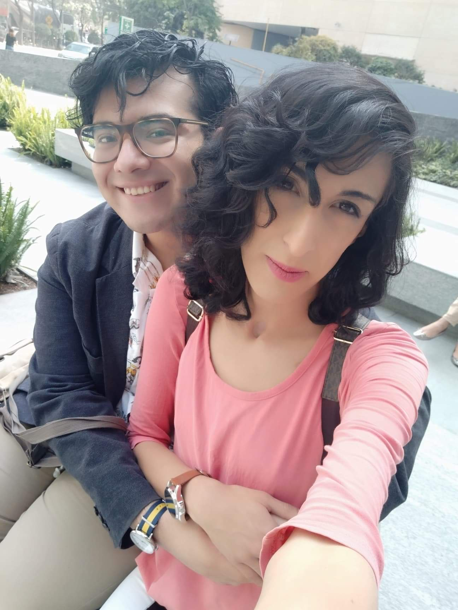
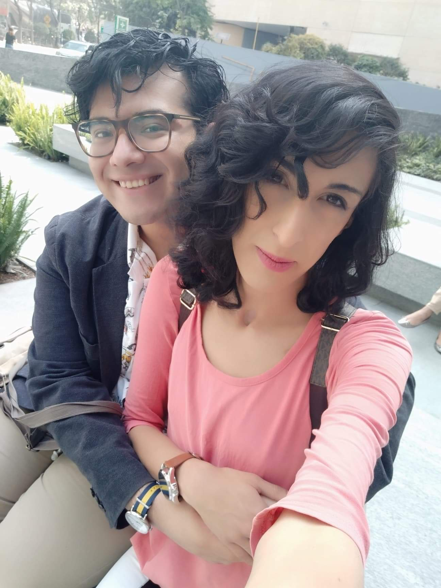
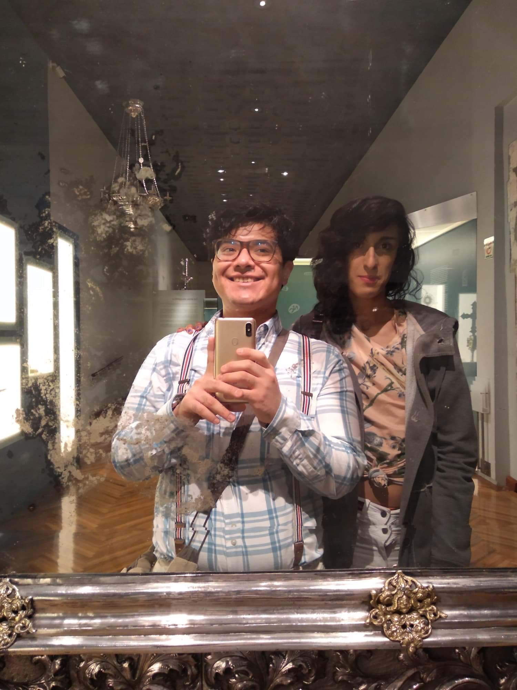
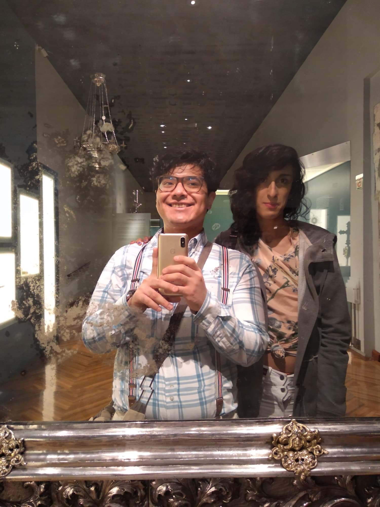
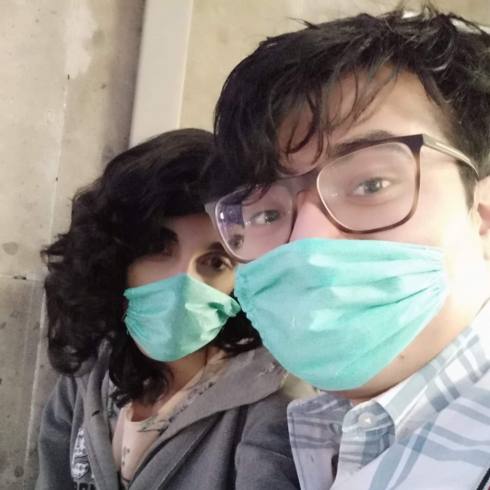
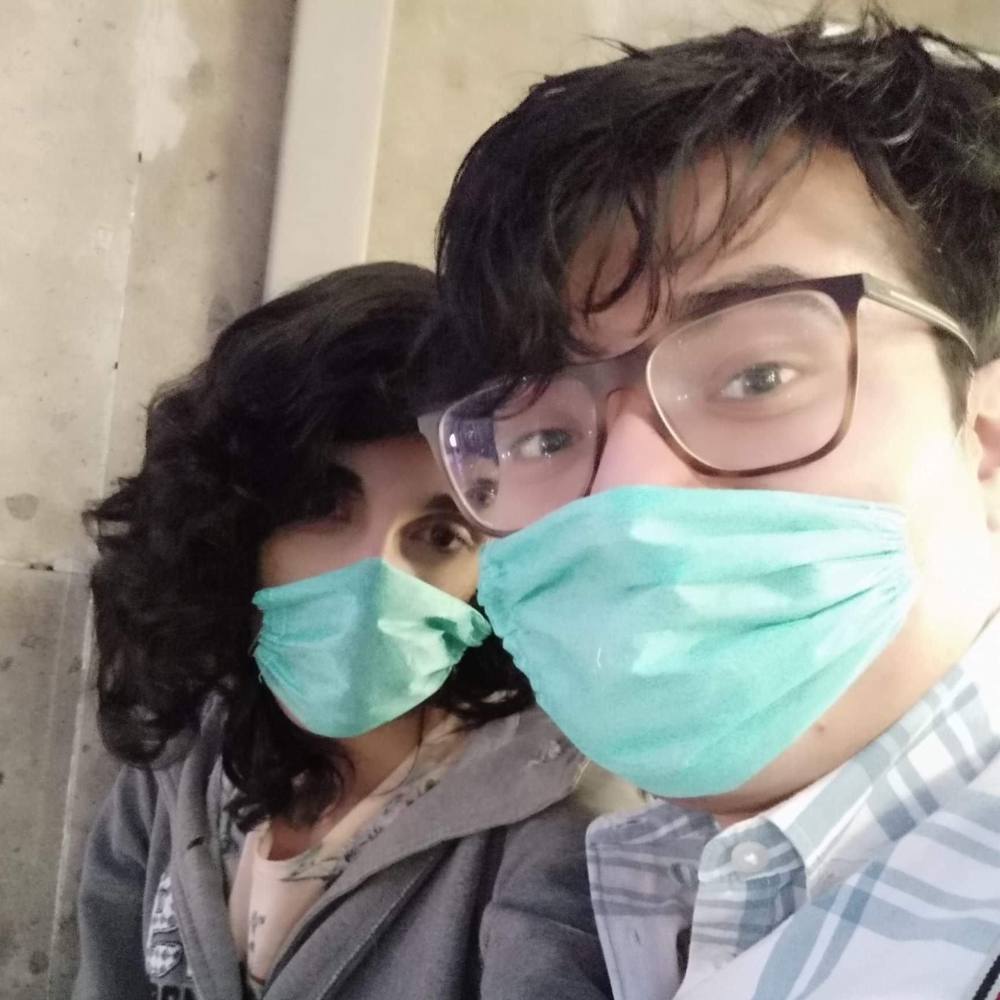
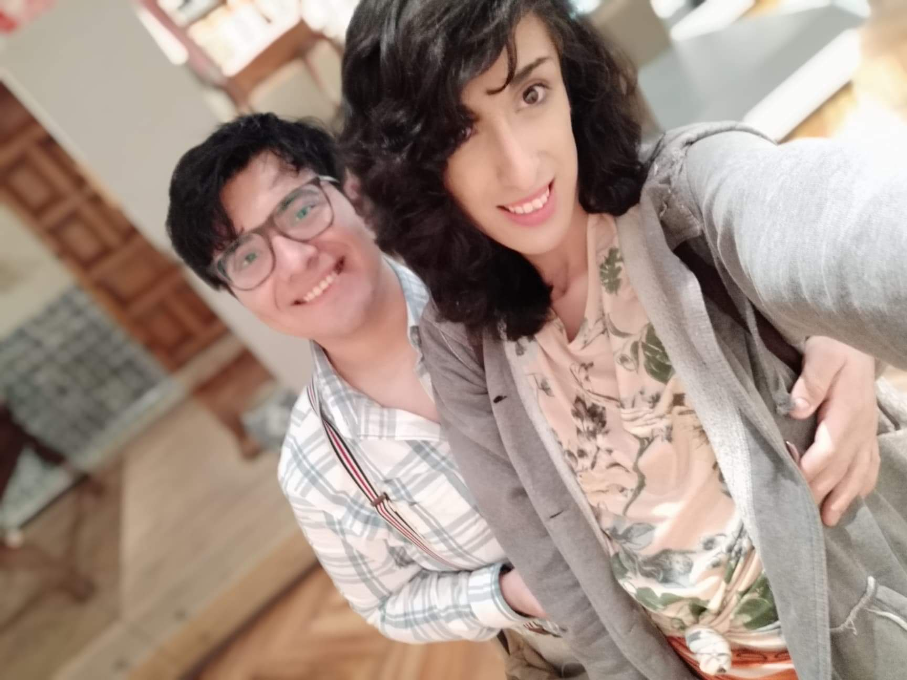
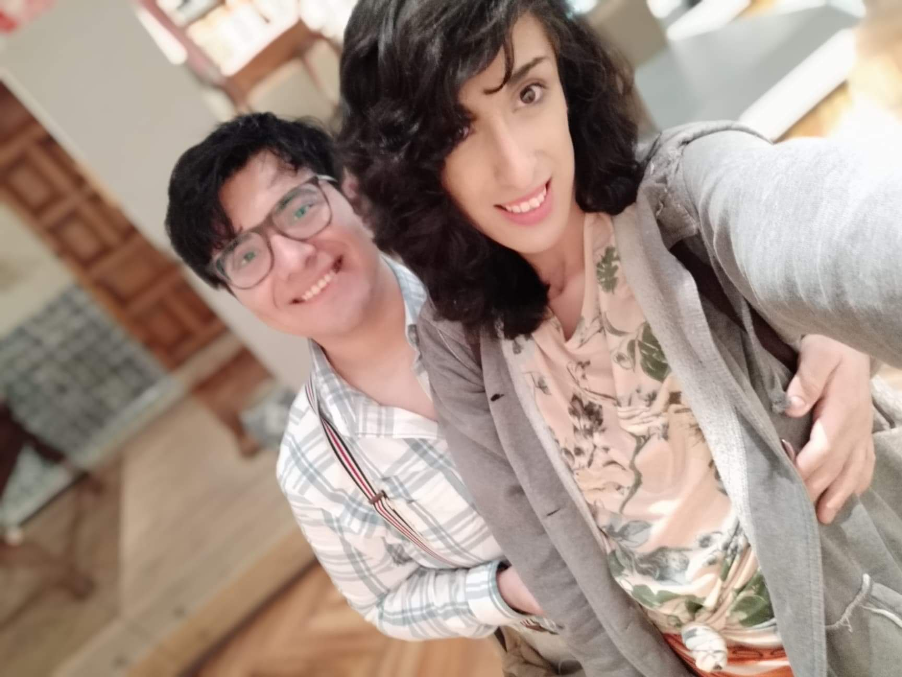

Muchas gracias amor, eres la persona mas especial que he conocido, si te soy sincera yo no pensaba
encontrar el amor, aunque lo queria nunca buscaba eso ya que no creo que exista, pero tu me hiciste
cambiar de idea.
Te quiero muchisimo has logardo ilusionarme, hacer que desee pasar el resto de mi vida contigo, que esto
sea para siempre, y no se si algo asi sea posible pero eso pienso cada vez que me acuesto y deseo que tu estes
conmigo acompañandome, cuando tenemos citas ya que tu siempre las haces especiales, muy diferentes a como seria
una cita comunmente.
Estos 8 meses que llevamos de conocernos han sido los mejores para mi, de verdad me has hecho muy feliz y no
hay una forma de poder describirtelo, me encanta todo de ti, tu cabello, tu sonrisa la forma en la que
me tratas, como me abrazas me besas haces que quiera que ese momento sea para siempre pero obvio eso es
imposible. Tu eres el mejor conmigo sabes escucharme y estar ahi cuando yo lo necesito, cada vez que me siento
triste tu estas ahi conmigo me escuchas e intentas consolarme.
Quiero que sepas que eres el mejor, un chico especial y yo te quiero mucho, si te soy sincera la primera vez
que nos vimos no crei gustarte, pense que no me volverias a hablar, pero me aceptaste como soy, para ti siempre
fui tu mujer aunque no sea al 100% una mujer.
Esta carta siempre estara disponible para ti, para que la leas cuando quieras recordarme y si en un futuro ya
no estamos juntos con ella vas a poder recordarme, quiero que sepas que TE AMO y siempre podras contar conmigo.
 

 


 

 
